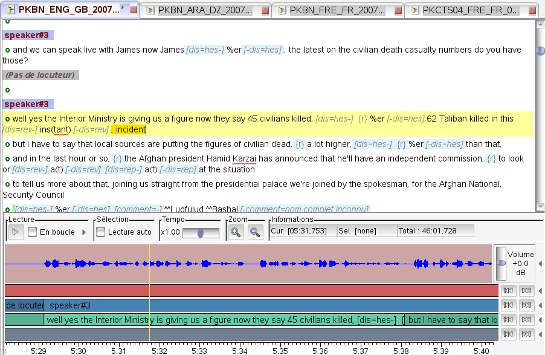
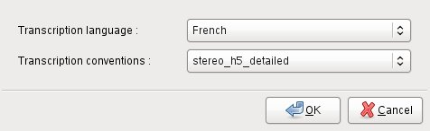
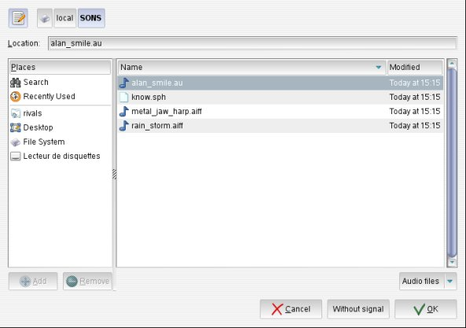
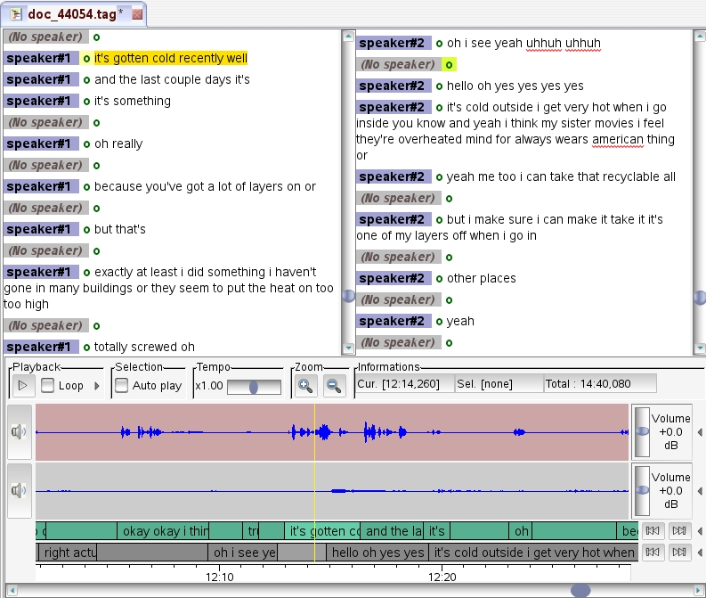
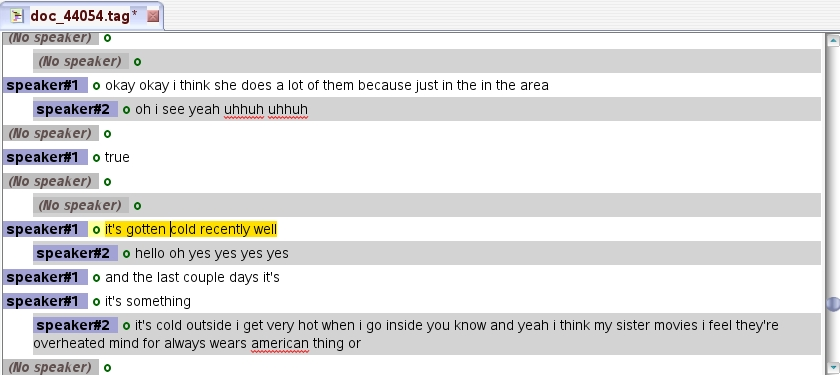

The annotation editor is the TranscriberAG component through which one can create and edit textual annotations on an audio signal (or the audio track of a video signal). The editor window can be composed of several parts:
This page describes general features of the annotation editor:
Specific features of the text and audio widgets are described in corresponding pages.
Several files can be opened at the same time within TranscriberAG. Each file is then loaded in a separate AnnotationEditor, and docked in a notebook, as shown in above screenshot. One can switch to the current file by clicking on the upper notebook label, or pressing <ctrl+PageDown> (go to next page) or <ctrl+PageUp> (go to previous page).
Loaded files gain exclusive access to the audio device only when signal is played. Thus, only one signal can be played at a time, but as soon as current soundtrack is paused, another soundtrack can be played or another application can gain access to the audio device. Reciprocally, if another application uses the audio device, TranscriberAG will not be able to get exclusive access to the device. Depending on how the other application manages audio device locking, pausing the playback within this application may be not sufficient. Stopping the playback may be necessary.
Clicking on the cross icon next to file name (or using <ctrl+w> shortcut, or File > Close menu option) causes corresponding file to close.
Notice: In the explorer tree, TranscriberAG displays usual media files. For opening others formats compatible with FFmpeg, please choose "All files" display.
When an audio file is opened through the File Explorer (or using the File > Open menu option), TranscriberAG first checks if any annotation file exists for selected signal (lookup being performed on file naming rules).
If not, a new annotation file will be automatically created. The user is prompted to select main transcription language and applicable
annotation conventions:

The main transcription language defines the default keyboard mode set for text input. The current version is configured with the following languages :
Other latin languages can easily be configured by a corpus administrator (refer to TranscriberAG configuration manual).
Transcription conventions define the way speech transcription should be undertaken :
Those conventions are usually detailled in a transcription conventions document. TranscriberAG provides mechanisms to enforce and control their application.
Different conventions can be configured by a corpus administrator (refer to TranscriberAG configuration manual for more information on how to configure annotation conventions).
Annotation editor menus and actions will be automatically configured for selected annotation conventions (see Signal Annotation).
The following default conventions are defined:
OK button validates new file creation. A new annotation graph is initialized for selected annotation conventions, containing basically one segment for each segmentation level. The user can then create new annotations, as explained in Text Widget section.
If Cancel is selected, new file creation is aborted.
If an existing annotation file can be found for selected signal file, then the user is prompted to confirm new annotation file creation or use existing file:
Yes button validates new file creation, whereas No button will cause existing file (which name is displayed in dialog) to be loaded in the editor.
When a TranscriberAG annotation file (generally suffixed ".tag") is opened through the File Explorer Tree (or using the File > Open menu option or <ctrl+o> shortcut), TranscriberAG loads annotation and corresponding signal files in a new annotation editor session.
Signal file lookup is done with respect to signal file name stored in the annotation file. If signal full pathname isn't defined, then TranscriberAG first looks in the annotation file parent directory. If not found, then it looks in the default directory for audio files defined in configuration parameters. If not found, then it prompts the user to manually select the signal file:

If a signal file is selected, its path is stored in annotation file, allowing its automatic reload next time annotation file is reloaded. To avoid sound association press Without signal button; annotation file is still opened but displays only textual annotations.
| File locked button in the Toolbar indicates current file editability state: when shown as an open padlock, as illustrated, then current file can be updated. When shown as a closed padlock, then current file is only readable. By clicking on the button, one can change the editability state of the editor buffer BUT NOT OF THE FILE. It can be useful to lock current file to avoid unwanted modifications when browsing into it. |
TranscriberAG natively supports reading the following annotation file formats:
If any file of one of these formats is opened in TranscriberAG, it is "on the fly" converted to TAG format and displayed in a new annotation editor. It can then be edited.
Except for SCLITE format, some command-line tools are also provided to convert files to TAG format (trs2tag, chat2tag, ctm2tag, stm2tag, mdtm2tag,...).
Other file formats can be loaded in TranscriberAG if appropriate format support plug-ins are provided
>> Back to page menu| Pressing the Save button in the Toolbar (or using the File > Save menu option or <ctrl+s> shortcut) saves current annotation buffer contents to TAG file format. |
| Using File > Save As menu option opens the an open dialog to allow the user to input a new file name. |
TranscriberAG natively supports exporting annotations to the following annotation file formats:
Due to the modeling restrictions inherent to each format, some information losses may occur during conversion.
Some command-line tools are also provided to convert files from TAG format (tag2chat, tag2stm, tag2html, tag2txt, ...).
Other file formats can be loaded in TranscriberAG if appropriate format support plug-ins are provided
>> Back to page menuTranscriberAG automatically backups any edited file at a given period (which can be configured, see Configuration section).
| Should current editing session crash, then automatic backup restoration will be proposed next time file is opened |
File > Revert file > Revert to saved file menu option allows to revert buffer contents to last saved version of current file, canceling all edit actions done since. Last saved version can be found in file named <file_name>#.
File > Revert file > Revert to autosaved file allows to revert buffer contents to last automatic backup of current file (which is generally more recent than last save). Auto-saved files are periodically saved in file named <file_name>~. Autosave period is configurable (cf. Configuration > General Configurations).
The following toolbar buttons allow to manage text and signal synchronization during file browses.
This allows to set eg. "full synchronization" between text and signal, when manually transcribing an audio file, and to disconnect this synchronization for a quick browse through the transcription text while signal is playing.
It is also possible to activate or inhibit highlighting or tags of current text segment.
| Editor tags displayed button When activated (show as illustrated) all qualifiers tags are displayed in editor. When shown crossed with a red line, qualifiers hidden mode is ON, and the user can refine hidden mode options by clicking on the arrow button on the right, and select which kind of qualifiers should be hidden. | |
| Text synchronized to signal button allows to activate/deactivate automatic positioning of the text cursor relatively to the current signal offset. When shown as illustrated, text is synchronized to signal, which means that text cursor "follows" the signal cursor. When shown crossed with a red line, text is not synchronized to the signal. | |
| Signal synchronized to text button allows to activate/deactivate automatic positioning of the signal cursor relatively to the current text cursor position. When shown as illustrated, signal is synchronized to text, which means that signal cursor "follows" the text cursor. When shown crossed with a red line, signal is not synchronized to the text. | |
| Highlight button when activated (shows as illustrated), the current segment of text in the annotation editor is highlighted. When shown crossed with a red line, text highlighting is disabled. For a stereo file with multiple views, one can refine highlighting options by clicking on the arrow button on the right, and select in which view to activate highlight. |
TranscriberAG supports the annotation of stereo files, and provides specific features to ease this task, such as:

Most of the time, users will find it more practical to use dual text widgets when editing speech transcription.
When just browsing through a conversational-type stereo file transcription, it may be more comfortable to use a "merged" view to get a better overview of the dialog. Speech turns associated to second channel then appear indented, as shown below:

Unique editor button in the toolbar allows to switch between various display modes for stereo files:
|